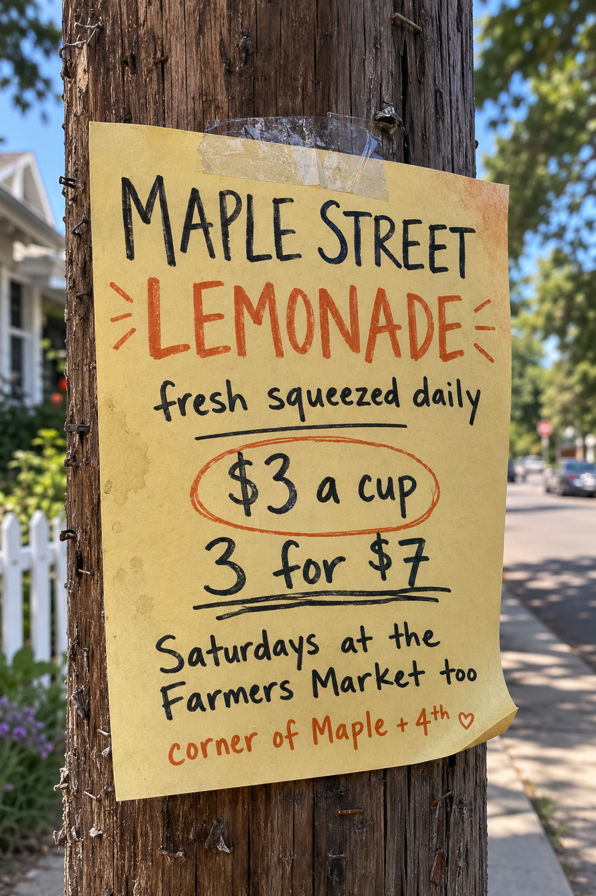
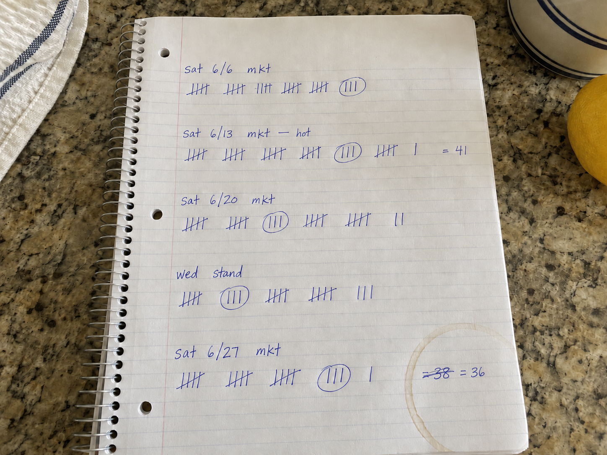

She's been running a lemonade stand out front on Maple Street for about six months, plus a booth at the Saturday farmers market. It works. Around $400 a week. She buys the lemons, makes the syrup, works both spots, and does whatever bookkeeping gets done.
There is no system. There was never a reason for one. She is the system — she knows what to buy because she remembers last Saturday, and she knows what things cost because she was there when she paid for them.
it worked fine until it didn'tNow the orders are getting bigger than one person can improvise. The kind where you have to say yes to a quantity and a price and a date, in advance, in writing. And to answer one of those, she'd have to know things precisely that she has only ever known approximately.
So the records came out of the drawer. All of them.
You have a folder of her records and a couple of hours. You've never seen this business before. Everything you're about to conclude has to come from what's in front of you.
Nothing here is labeled. Nothing cross-references anything. Some of it contradicts other parts of it, and she has never had reason to notice.
This is not a puzzle someone built for you. It's what six months of a working business looks like when the person running it is the entire filing system.

Gut answers. Ten seconds each. Confidence 1–5.
Paste them into section 0 of the findings log. Then, and only then, open the folder.

Found what was planted. Fine. Expected.
Found something nobody planted. The best outcome. The generator made messes it never noticed, and those are the only genuinely un-authored problems in here — the closest thing to what a real company's records actually look like. Nobody has the key to those.
Missed it. Also information. Missing something tells you what a room of forty people will miss too.
Key sealed until findings filed
Once you know where the records fail, you get to do something about it — write a standing instruction that makes the assistant show its reasoning before it shows you a number, then hand a whole morning's prep to something that runs while you're asleep and tells you what it found.
That's the part this is really about. The audit is just how you earn the right to have an opinion about it.